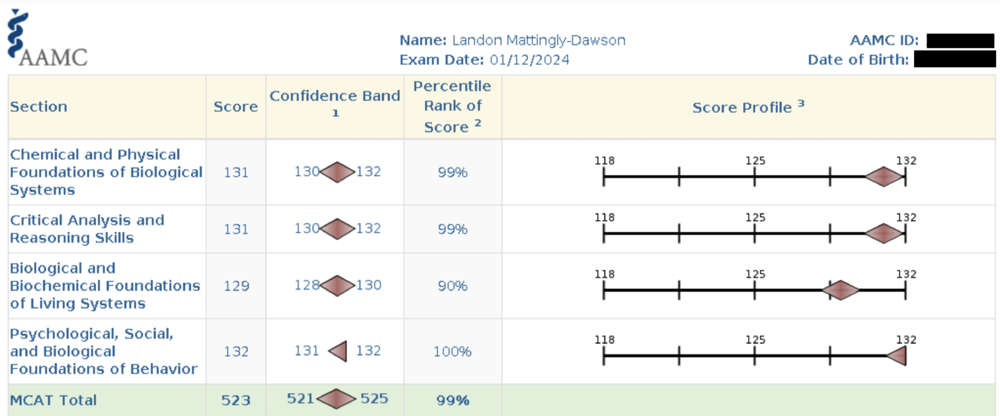
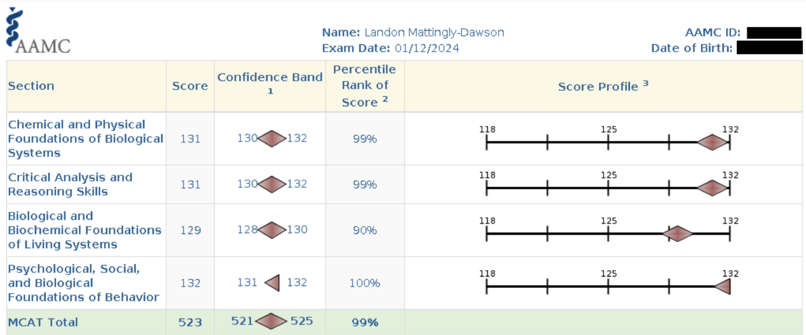

Welcome to my MCAT Tutoring webpage! My name is Landon. I’m an Arizona State University graduate, first-attempt 523 MCAT scorer, and incoming M.D. candidate at The Ohio State University College of Medicine.
I feel passionate about tutoring for the MCAT because it was a test that did not come as easily to me as most other 520+ scorers. My Kaplan full-length diagnostic exam was a 499. It took me several hundred hours to discover optimal study techniques, and I experienced many dreaded plateaus en route to my score.
My tutoring philosophy revolves around two main beliefs:
1. Deep, conceptual understanding is more important than memorization. Research in cognitive psychology has long shown that depth of processing correlates strongly with retention (Craik & Lockhart). Given the breadth of material tested on the MCAT, it is very likely that you will only encounter many topics once during your entire study period. Ensuring a profound level of understanding—especially for high-yield material—is therefore essential.
2. The MCAT primarily measures perseverance, adaptability, and confidence. Intelligence matters, but it is secondary. Exams like the SAT or LSAT—with limited content and simpler structure—depend more heavily on natural test-taking ability. In contrast, the MCAT rewards sustained effort, strategic adaptation, and confidence built through experience. A strong content foundation + confidence + test-taking skills = a high probability of answering a given question correctly. Developing this foundation requires persevering through setbacks and adapting your study methods based on what is and isn’t working.
Tutoring Session Types
I categorize my tutoring into three main session types:
Study Plan Consultation
A one-time, one-hour session designed to help you build or refine a study
plan based on your current stage of MCAT preparation. Ideal for students
just starting out or those struggling with plateaus.
$20 (one hour)
Directed Content Tutoring
Traditional tutoring focused on specific topics you find challenging.
You identify the topic, I prepare in advance, and we work through your
misunderstandings together.
$35/hour
Longitudinal Comprehensive Tutoring
A structured, ongoing approach combining consultation and directed content
tutoring. We meet regularly (typically weekly) to review progress, solidify
difficult material, and plan the upcoming week. I believe this approach is
the most effective for substantial score improvement.
$35/hour
I do not provide directed content tutoring for the CARS section, though I am happy to offer strategic advice upon request.
Please note the competitiveness of my rates. Large test-prep companies often charge $200–$250 per hour, frequently for tutors with scores around 515. Private tutors with 520+ scores typically charge similar rates.